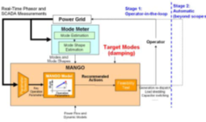

Date of Publication:
October 2010Version Information:
N/AModel Accessibility:
Simulation studies were conducted with commercialized software.Proprietary Documentation:
No. The code is freely available, but the data used in the initial model tests is sensitive.Model Symbol:
None.Accreditation:
None.Type/Category of Model:
Brief Theoretical Background:
Modal Analysis for Grid Operation (MANGO) is a method for damping improvement through operating point adjustments. It explores the relationship between low damping and grid operating conditions to develop recommended actions for damping improvement, and therefore reduce the chance of system breakup and power outages.
The MANGO procedure consists of three major steps:
Three approaches – direct modal sensitivity estimation, ANN-based nonlinear mapping, and a decision-tree method – have been formulated and studied with promising results from a medium-size system. Impact of topology change on damping has been studied as well.
MANGO control does not rely on a known system model, but uses real-time phasor measurements and other synchronized measurements. MANGO can potentially utilize responsive loads to adjust system power flow patterns to improve system damping. MANGO can also utilize some other smart grid technologies for power flow pattern adjustment. Therefore, MANGO can not only improve grid reliability and efficiency, but also help to facilitate the development of smart grid technologies such as renewable energy, demand response, and energy storage. This has both economic and environmental implications.
List of References:
Model Specifications:
This is more of a software tool than a model.Model Dependencies:
Neuro Network Toolbox and Power System Toolbox (PST).Interfacing Information:
Platform: Windows OS, and MATLABDiagrammatic Representation:

Interfacing Capabilities for HIL Simulations:
No.Model Validation:
Validation of the method itself is relatively straightforward. Sets of simulation data are generated and the particular MANGO approach is applied. This can be as simple as varying the output of a single generator and observing the time-series or eigenvalue-analysis results. If the results of the method fall within a specified tolerance of the expectation, the methodology and understanding of that method are valid. If it fails to meet these expectations, the method may require a refinement in its application, or the understanding of the fundamental principles.The second form of validation, validation of consistency, often takes two approaches as well. The first is to determine if a method produces similar results over several trials. The other form of consistency validation is to ensure a particular program is providing a reasonable answer. To investigate this requirement, a data set is often analyzed by a second technique. These techniques may not be different from any aspect aside from their originating vendor. For example, the PowerTech Labs time domain simulation incorporates a method for performing ringdown analysis [45], as does the PNNL Dynamic System Identification (DSI) toolbox [56]. Both programs use similar approaches and methods, but two different implementations. For a proper validation, both programs should arrive at similar results for a given data set.
Metrics for validation:
No. If following the list of recommended actions results in an improvement, then it is validated.